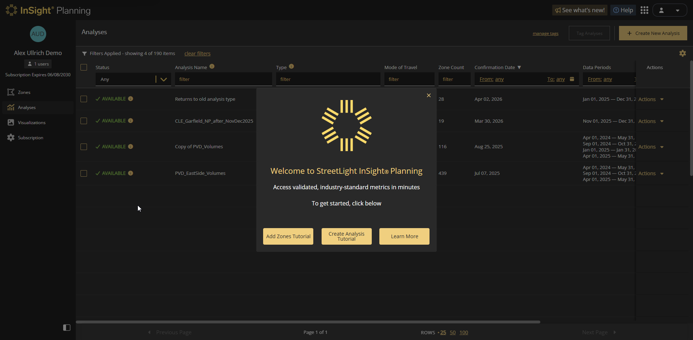
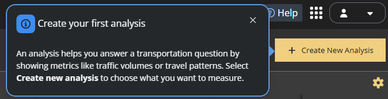
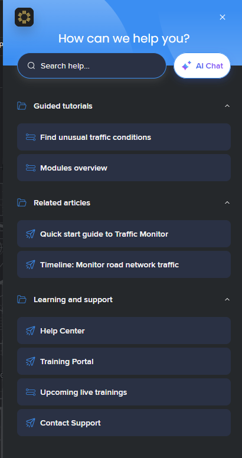
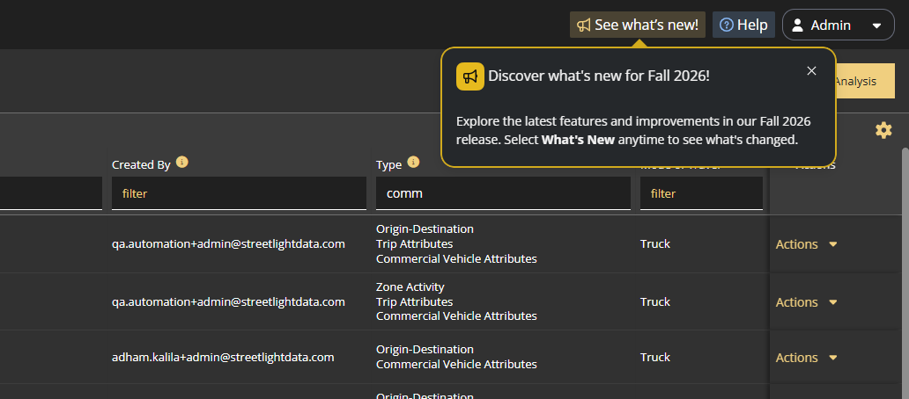
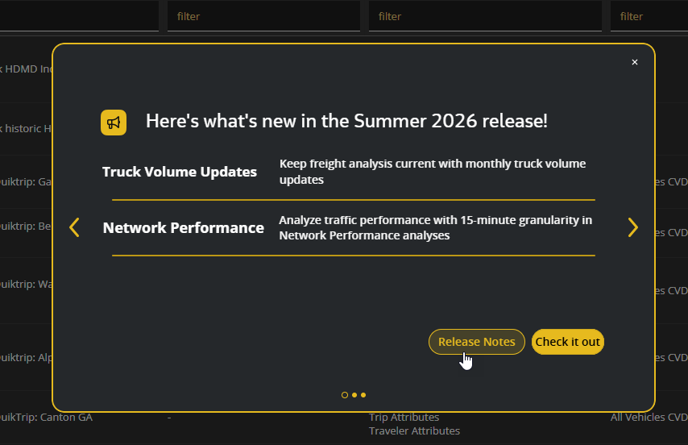

Onboarding Redesign
I reviewed how StreetLight introduces users to its transportation analytics products and shifted onboarding from long, feature-oriented tours to short, contextual guidance built around the problem the user wants to solve.
The challenge
We had a lot of help content available, but it wasn't always presented at the right time or in the right context.
- Tours narrated controls (“click Next”), users might finish a tour without knowing how to apply the product to a project.
- Intro flows sent users to other pages and training before they had a need for them.
- Trying to anticipate users questions resulted in popup overload.
WalkMe analytics confirmed it: most Help menu items had fewer than 3 views per month.

What I did
I audited the existing guidance and user analytics, comparing against best practices from the Nielsen Norman Group and Better Onboarding by Krystal Higgins, as well as recent trends from Chameleon's 2025 Onboarding Benchmark.
My guiding principle was to always keep the user's transportation question in mind as they navigate the product and make key decisions. I refined contextual help to help the decision in front of them at any given place in our app. Four changes followed:
- Rewrote in-app tutorials to open with the user's question: “Create your first analysis” opens with “An analysis helps you answer a transportation question…”; similar rewrites cover choosing study areas and reading results.
- Split the Help menu into Guided tutorials and Related articles for the current page, separate from Learning and support (Help Center, training, support).
- Renamed contextual help messages to be more action-oriented and directly relevant to the user's task.
- Made release announcements on demand: What's New no longer opens at login; a small notification on the button opens the highlights when you choose.

Screenshot to add: the “Find insights in your results” guidance beside the results charts.



Value added
The revised cross-channel content strategy and rewrites shipped across our products. We are monitoring the outcomes to measure the impact of these changes, and adjust as needed. Already, the more curated set of content is easier to find and use for internal users, and easier for content designers to maintain.